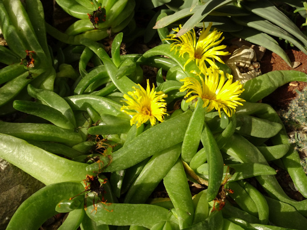

Аизовые - Aizoaceae
66 images

Астровые - Asteraceae
41 images

Асфоделовые - Asphodelaceae
169 images

Бромелиевые - Bromeliaceae
76 images

Журавельниковые - Geraniaceae
10 images

Кактусовые - Cactaceae
257 images

Камнеломковые - Saxifragaceae
125 images

Коммелиновые - Commelinaceae
36 images

Кутровые - Apocynaceae
23 images

Молочайные - Euphorbiaceae
51 images

Спаржевые - Asparagaceae
98 images

Толстянковые - Crassulaceae
274 images



Суккуленты - Succulents